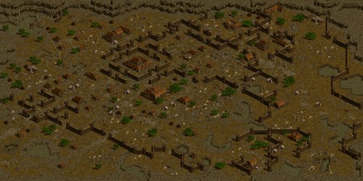
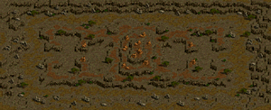
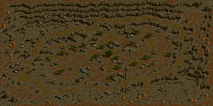
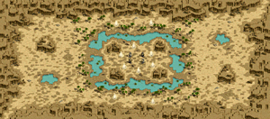
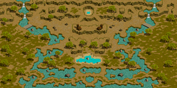
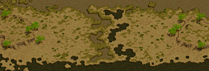
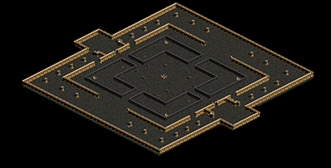

アリーナGvG 対戦可能時間(ALL)
アリーナGvG一覧(21:20-23:20帯)はこちら| MAPイメージ |  |  |  |  |  |  |  |
|---|---|---|---|---|---|---|---|
| スタート時間 | 廃墟スバイン要塞 | ソゴム山脈 / 赤い丘 | エルベルク山脈 / 岩の谷 | デフヒルズ / 砂漠の遺跡 | バベル大河 / 2粒の涙 | ナダラ平原 / 2つの丘 | ハノブ / 地下決闘場 |
| 10:00 | 10:00 | 10:01 | 10:02 | 10:03 | 10:04 | 10:05 | 10:05 |
| 10:03 | 10:04 | 10:05 | 10:06 | 10:07 | 10:08 | 10:08 | |
| 10:07 | 10:08 | 10:09 | 10:10 | 10:11 | 10:12 | 10:12 | |
| 10:10 | 10:11 | 10:12 | 10:13 | 10:14 | 10:15 | 10:15 | |
| 10:14 | 10:15 | 10:16 | 10:17 | 10:18 | 10:19 | 10:19 | |
| 10:17 | 10:18 | 10:19 | 10:20 | 10:21 | 10:22 | 10:22 | |
| 10:21 | 10:22 | 10:23 | 10:24 | 10:25 | 10:26 | 10:26 | |
| 10:24 | 10:25 | 10:26 | 10:27 | 10:28 | 10:29 | 10:29 | |
| 10:28 | 10:29 | 10:30 | 10:31 | 10:32 | 10:33 | 10:33 | |
| 10:31 | 10:32 | 10:33 | 10:34 | 10:35 | 10:36 | 10:36 | |
| スタート時間 | 廃墟スバイン要塞 | ソゴム山脈 / 赤い丘 | エルベルク山脈 / 岩の谷 | デフヒルズ / 砂漠の遺跡 | バベル大河 / 2粒の涙 | ナダラ平原 / 2つの丘 | ハノブ / 地下決闘場 |
| 10:40 | 10:40 | 10:41 | 10:42 | 10:43 | 10:44 | 10:45 | 10:45 |
| 10:43 | 10:44 | 10:45 | 10:46 | 10:47 | 10:48 | 10:48 | |
| 10:47 | 10:48 | 10:49 | 10:50 | 10:51 | 10:52 | 10:52 | |
| 10:50 | 10:51 | 10:52 | 10:53 | 10:54 | 10:55 | 10:55 | |
| 10:54 | 10:55 | 10:56 | 10:57 | 10:58 | 10:59 | 10:59 | |
| 10:57 | 10:58 | 10:59 | 11:00 | 11:01 | 11:02 | 11:02 | |
| 11:01 | 11:02 | 11:03 | 11:04 | 11:05 | 11:06 | 11:06 | |
| 11:04 | 11:05 | 11:06 | 11:07 | 11:08 | 11:09 | 11:09 | |
| 11:08 | 11:09 | 11:10 | 11:11 | 11:12 | 11:13 | 11:13 | |
| 11:11 | 11:12 | 11:13 | 11:14 | 11:15 | 11:16 | 11:16 | |
| スタート時間 | 廃墟スバイン要塞 | ソゴム山脈 / 赤い丘 | エルベルク山脈 / 岩の谷 | デフヒルズ / 砂漠の遺跡 | バベル大河 / 2粒の涙 | ナダラ平原 / 2つの丘 | ハノブ / 地下決闘場 |
| 11:20 | 11:20 | 11:21 | 11:22 | 11:23 | 11:24 | 11:25 | 11:25 |
| 11:23 | 11:24 | 11:25 | 11:26 | 11:27 | 11:28 | 11:28 | |
| 11:27 | 11:28 | 11:29 | 11:30 | 11:31 | 11:32 | 11:32 | |
| 11:30 | 11:31 | 11:32 | 11:33 | 11:34 | 11:35 | 11:35 | |
| 11:34 | 11:35 | 11:36 | 11:37 | 11:38 | 11:39 | 11:39 | |
| 11:37 | 11:38 | 11:39 | 11:40 | 11:41 | 11:42 | 11:42 | |
| 11:41 | 11:42 | 11:43 | 11:44 | 11:45 | 11:46 | 11:46 | |
| 11:44 | 11:45 | 11:46 | 11:47 | 11:48 | 11:49 | 11:49 | |
| 11:48 | 11:49 | 11:50 | 11:51 | 11:52 | 11:53 | 11:53 | |
| 11:51 | 11:52 | 11:53 | 11:54 | 11:55 | 11:56 | 11:56 | |
| スタート時間 | 廃墟スバイン要塞 | ソゴム山脈 / 赤い丘 | エルベルク山脈 / 岩の谷 | デフヒルズ / 砂漠の遺跡 | バベル大河 / 2粒の涙 | ナダラ平原 / 2つの丘 | ハノブ / 地下決闘場 |
| 12:00 | 12:00 | 12:01 | 12:02 | 12:03 | 12:04 | 12:05 | 12:05 |
| 12:03 | 12:04 | 12:05 | 12:06 | 12:07 | 12:08 | 12:08 | |
| 12:07 | 12:08 | 12:09 | 12:10 | 12:11 | 12:12 | 12:12 | |
| 12:10 | 12:11 | 12:12 | 12:13 | 12:14 | 12:15 | 12:15 | |
| 12:14 | 12:15 | 12:16 | 12:17 | 12:18 | 12:19 | 12:19 | |
| 12:17 | 12:18 | 12:19 | 12:20 | 12:21 | 12:22 | 12:22 | |
| 12:21 | 12:22 | 12:23 | 12:24 | 12:25 | 12:26 | 12:26 | |
| 12:24 | 12:25 | 12:26 | 12:27 | 12:28 | 12:29 | 12:29 | |
| 12:28 | 12:29 | 12:30 | 12:31 | 12:32 | 12:33 | 12:33 | |
| 12:31 | 12:32 | 12:33 | 12:34 | 12:35 | 12:36 | 12:36 | |
| スタート時間 | 廃墟スバイン要塞 | ソゴム山脈 / 赤い丘 | エルベルク山脈 / 岩の谷 | デフヒルズ / 砂漠の遺跡 | バベル大河 / 2粒の涙 | ナダラ平原 / 2つの丘 | ハノブ / 地下決闘場 |
| 12:40 | 12:40 | 12:41 | 12:42 | 12:43 | 12:44 | 12:45 | 12:45 |
| 12:43 | 12:44 | 12:45 | 12:46 | 12:47 | 12:48 | 12:48 | |
| 12:47 | 12:48 | 12:49 | 12:50 | 12:51 | 12:52 | 12:52 | |
| 12:50 | 12:51 | 12:52 | 12:53 | 12:54 | 12:55 | 12:55 | |
| 12:54 | 12:55 | 12:56 | 12:57 | 12:58 | 12:59 | 12:59 | |
| 12:57 | 12:58 | 12:59 | 13:00 | 13:01 | 13:02 | 13:02 | |
| 13:01 | 13:02 | 13:03 | 13:04 | 13:05 | 13:06 | 13:06 | |
| 13:04 | 13:05 | 13:06 | 13:07 | 13:08 | 13:09 | 13:09 | |
| 13:08 | 13:09 | 13:10 | 13:11 | 13:12 | 13:13 | 13:13 | |
| 13:11 | 13:12 | 13:13 | 13:14 | 13:15 | 13:16 | 13:16 | |
| スタート時間 | 廃墟スバイン要塞 | ソゴム山脈 / 赤い丘 | エルベルク山脈 / 岩の谷 | デフヒルズ / 砂漠の遺跡 | バベル大河 / 2粒の涙 | ナダラ平原 / 2つの丘 | ハノブ / 地下決闘場 |
| 13:20 | 13:20 | 13:21 | 13:22 | 13:23 | 13:24 | 13:25 | 13:25 |
| 13:23 | 13:24 | 13:25 | 13:26 | 13:27 | 13:28 | 13:28 | |
| 13:27 | 13:28 | 13:29 | 13:30 | 13:31 | 13:32 | 13:32 | |
| 13:30 | 13:31 | 13:32 | 13:33 | 13:34 | 13:35 | 13:35 | |
| 13:34 | 13:35 | 13:36 | 13:37 | 13:38 | 13:39 | 13:39 | |
| 13:37 | 13:38 | 13:39 | 13:40 | 13:41 | 13:42 | 13:42 | |
| 13:41 | 13:42 | 13:43 | 13:44 | 13:45 | 13:46 | 13:46 | |
| 13:44 | 13:45 | 13:46 | 13:47 | 13:48 | 13:49 | 13:49 | |
| 13:48 | 13:49 | 13:50 | 13:51 | 13:52 | 13:53 | 13:53 | |
| 13:51 | 13:52 | 13:53 | 13:54 | 13:55 | 13:56 | 13:56 | |
| MAPイメージ | |||||||
| スタート時間 | 廃墟スバイン要塞 | ソゴム山脈 / 赤い丘 | エルベルク山脈 / 岩の谷 | デフヒルズ / 砂漠の遺跡 | バベル大河 / 2粒の涙 | ナダラ平原 / 2つの丘 | ハノブ / 地下決闘場 |
| 14:00 | 14:00 | 14:01 | 14:02 | 14:03 | 14:04 | 14:05 | 14:05 |
| 14:03 | 14:04 | 14:05 | 14:06 | 14:07 | 14:08 | 14:08 | |
| 14:07 | 14:08 | 14:09 | 14:10 | 14:11 | 14:12 | 14:12 | |
| 14:10 | 14:11 | 14:12 | 14:13 | 14:14 | 14:15 | 14:15 | |
| 14:14 | 14:15 | 14:16 | 14:17 | 14:18 | 14:19 | 14:19 | |
| 14:17 | 14:18 | 14:19 | 14:20 | 14:21 | 14:22 | 14:22 | |
| 14:21 | 14:22 | 14:23 | 14:24 | 14:25 | 14:26 | 14:26 | |
| 14:24 | 14:25 | 14:26 | 14:27 | 14:28 | 14:29 | 14:29 | |
| 14:28 | 14:29 | 14:30 | 14:31 | 14:32 | 14:33 | 14:33 | |
| 14:31 | 14:32 | 14:33 | 14:34 | 14:35 | 14:36 | 14:36 | |
| スタート時間 | 廃墟スバイン要塞 | ソゴム山脈 / 赤い丘 | エルベルク山脈 / 岩の谷 | デフヒルズ / 砂漠の遺跡 | バベル大河 / 2粒の涙 | ナダラ平原 / 2つの丘 | ハノブ / 地下決闘場 |
| 14:40 | 14:40 | 14:41 | 14:42 | 14:43 | 14:44 | 14:45 | 14:45 |
| 14:43 | 14:44 | 14:45 | 14:46 | 14:47 | 14:48 | 14:48 | |
| 14:47 | 14:48 | 14:49 | 14:50 | 14:51 | 14:52 | 14:52 | |
| 14:50 | 14:51 | 14:52 | 14:53 | 14:54 | 14:55 | 14:55 | |
| 14:54 | 14:55 | 14:56 | 14:57 | 14:58 | 14:59 | 14:59 | |
| 14:57 | 14:58 | 14:59 | 15:00 | 15:01 | 15:02 | 15:02 | |
| 15:01 | 15:02 | 15:03 | 15:04 | 15:05 | 15:06 | 15:06 | |
| 15:04 | 15:05 | 15:06 | 15:07 | 15:08 | 15:09 | 15:09 | |
| 15:08 | 15:09 | 15:10 | 15:11 | 15:12 | 15:13 | 15:13 | |
| 15:11 | 15:12 | 15:13 | 15:14 | 15:15 | 15:16 | 15:16 | |
| スタート時間 | 廃墟スバイン要塞 | ソゴム山脈 / 赤い丘 | エルベルク山脈 / 岩の谷 | デフヒルズ / 砂漠の遺跡 | バベル大河 / 2粒の涙 | ナダラ平原 / 2つの丘 | ハノブ / 地下決闘場 |
| 15:20 | 15:20 | 15:21 | 15:22 | 15:23 | 15:24 | 15:25 | 15:25 |
| 15:23 | 15:24 | 15:25 | 15:26 | 15:27 | 15:28 | 15:28 | |
| 15:27 | 15:28 | 15:29 | 15:30 | 15:31 | 15:32 | 15:32 | |
| 15:30 | 15:31 | 15:32 | 15:33 | 15:34 | 15:35 | 15:35 | |
| 15:34 | 15:35 | 15:36 | 15:37 | 15:38 | 15:39 | 15:39 | |
| 15:37 | 15:38 | 15:39 | 15:40 | 15:41 | 15:42 | 15:42 | |
| 15:41 | 15:42 | 15:43 | 15:44 | 15:45 | 15:46 | 15:46 | |
| 15:44 | 15:45 | 15:46 | 15:47 | 15:48 | 15:49 | 15:49 | |
| 15:48 | 15:49 | 15:50 | 15:51 | 15:52 | 15:53 | 15:53 | |
| 15:51 | 15:52 | 15:53 | 15:54 | 15:55 | 15:56 | 15:56 | |
| スタート時間 | 廃墟スバイン要塞 | ソゴム山脈 / 赤い丘 | エルベルク山脈 / 岩の谷 | デフヒルズ / 砂漠の遺跡 | バベル大河 / 2粒の涙 | ナダラ平原 / 2つの丘 | ハノブ / 地下決闘場 |
| 16:00 | 16:00 | 16:01 | 16:02 | 16:03 | 16:04 | 16:05 | 16:05 |
| 16:03 | 16:04 | 16:05 | 16:06 | 16:07 | 16:08 | 16:08 | |
| 16:07 | 16:08 | 16:09 | 16:10 | 16:11 | 16:12 | 16:12 | |
| 16:10 | 16:11 | 16:12 | 16:13 | 16:14 | 16:15 | 16:15 | |
| 16:14 | 16:15 | 16:16 | 16:17 | 16:18 | 16:19 | 16:19 | |
| 16:17 | 16:18 | 16:19 | 16:20 | 16:21 | 16:22 | 16:22 | |
| 16:21 | 16:22 | 16:23 | 16:24 | 16:25 | 16:26 | 16:26 | |
| 16:24 | 16:25 | 16:26 | 16:27 | 16:28 | 16:29 | 16:29 | |
| 16:28 | 16:29 | 16:30 | 16:31 | 16:32 | 16:33 | 16:33 | |
| 16:31 | 16:32 | 16:33 | 16:34 | 16:35 | 16:36 | 16:36 | |
| スタート時間 | 廃墟スバイン要塞 | ソゴム山脈 / 赤い丘 | エルベルク山脈 / 岩の谷 | デフヒルズ / 砂漠の遺跡 | バベル大河 / 2粒の涙 | ナダラ平原 / 2つの丘 | ハノブ / 地下決闘場 |
| 16:40 | 16:40 | 16:41 | 16:42 | 16:43 | 16:44 | 16:45 | 16:45 |
| 16:43 | 16:44 | 16:45 | 16:46 | 16:47 | 16:48 | 16:48 | |
| 16:47 | 16:48 | 16:49 | 16:50 | 16:51 | 16:52 | 16:52 | |
| 16:50 | 16:51 | 16:52 | 16:53 | 16:54 | 16:55 | 16:55 | |
| 16:54 | 16:55 | 16:56 | 16:57 | 16:58 | 16:59 | 16:59 | |
| 16:57 | 16:58 | 16:59 | 17:00 | 17:01 | 17:02 | 17:02 | |
| 17:01 | 17:02 | 17:03 | 17:04 | 17:05 | 17:06 | 17:06 | |
| 17:04 | 17:05 | 17:06 | 17:07 | 17:08 | 17:09 | 17:09 | |
| 17:08 | 17:09 | 17:10 | 17:11 | 17:12 | 17:13 | 17:13 | |
| 17:11 | 17:12 | 17:13 | 17:14 | 17:15 | 17:16 | 17:16 | |
| スタート時間 | 廃墟スバイン要塞 | ソゴム山脈 / 赤い丘 | エルベルク山脈 / 岩の谷 | デフヒルズ / 砂漠の遺跡 | バベル大河 / 2粒の涙 | ナダラ平原 / 2つの丘 | ハノブ / 地下決闘場 |
| 17:20 | 17:20 | 17:21 | 17:22 | 17:23 | 17:24 | 17:25 | 17:25 |
| 17:23 | 17:24 | 17:25 | 17:26 | 17:27 | 17:28 | 17:28 | |
| 17:27 | 17:28 | 17:29 | 17:30 | 17:31 | 17:32 | 17:32 | |
| 17:30 | 17:31 | 17:32 | 17:33 | 17:34 | 17:35 | 17:35 | |
| 17:34 | 17:35 | 17:36 | 17:37 | 17:38 | 17:39 | 17:39 | |
| 17:37 | 17:38 | 17:39 | 17:40 | 17:41 | 17:42 | 17:42 | |
| 17:41 | 17:42 | 17:43 | 17:44 | 17:45 | 17:46 | 17:46 | |
| 17:44 | 17:45 | 17:46 | 17:47 | 17:48 | 17:49 | 17:49 | |
| 17:48 | 17:49 | 17:50 | 17:51 | 17:52 | 17:53 | 17:53 | |
| 17:51 | 17:52 | 17:53 | 17:54 | 17:55 | 17:56 | 17:56 | |
| MAPイメージ | |||||||
| スタート時間 | 廃墟スバイン要塞 | ソゴム山脈 / 赤い丘 | エルベルク山脈 / 岩の谷 | デフヒルズ / 砂漠の遺跡 | バベル大河 / 2粒の涙 | ナダラ平原 / 2つの丘 | ハノブ / 地下決闘場 |
| 18:00 | 18:00 | 18:01 | 18:02 | 18:03 | 18:04 | 18:05 | 18:05 |
| 18:03 | 18:04 | 18:05 | 18:06 | 18:07 | 18:08 | 18:08 | |
| 18:07 | 18:08 | 18:09 | 18:10 | 18:11 | 18:12 | 18:12 | |
| 18:10 | 18:11 | 18:12 | 18:13 | 18:14 | 18:15 | 18:15 | |
| 18:14 | 18:15 | 18:16 | 18:17 | 18:18 | 18:19 | 18:19 | |
| 18:17 | 18:18 | 18:19 | 18:20 | 18:21 | 18:22 | 18:22 | |
| 18:21 | 18:22 | 18:23 | 18:24 | 18:25 | 18:26 | 18:26 | |
| 18:24 | 18:25 | 18:26 | 18:27 | 18:28 | 18:29 | 18:29 | |
| 18:28 | 18:29 | 18:30 | 18:31 | 18:32 | 18:33 | 18:33 | |
| 18:31 | 18:32 | 18:33 | 18:34 | 18:35 | 18:36 | 18:36 | |
| スタート時間 | 廃墟スバイン要塞 | ソゴム山脈 / 赤い丘 | エルベルク山脈 / 岩の谷 | デフヒルズ / 砂漠の遺跡 | バベル大河 / 2粒の涙 | ナダラ平原 / 2つの丘 | ハノブ / 地下決闘場 |
| 18:40 | 18:40 | 18:41 | 18:42 | 18:43 | 18:44 | 18:45 | 18:45 |
| 18:43 | 18:44 | 18:45 | 18:46 | 18:47 | 18:48 | 18:48 | |
| 18:47 | 18:48 | 18:49 | 18:50 | 18:51 | 18:52 | 18:52 | |
| 18:50 | 18:51 | 18:52 | 18:53 | 18:54 | 18:55 | 18:55 | |
| 18:54 | 18:55 | 18:56 | 18:57 | 18:58 | 18:59 | 18:59 | |
| 18:57 | 18:58 | 18:59 | 19:00 | 19:01 | 19:02 | 19:02 | |
| 19:01 | 19:02 | 19:03 | 19:04 | 19:05 | 19:06 | 19:06 | |
| 19:04 | 19:05 | 19:06 | 19:07 | 19:08 | 19:09 | 19:09 | |
| 19:08 | 19:09 | 19:10 | 19:11 | 19:12 | 19:13 | 19:13 | |
| 19:11 | 19:12 | 19:13 | 19:14 | 19:15 | 19:16 | 19:16 | |
| スタート時間 | 廃墟スバイン要塞 | ソゴム山脈 / 赤い丘 | エルベルク山脈 / 岩の谷 | デフヒルズ / 砂漠の遺跡 | バベル大河 / 2粒の涙 | ナダラ平原 / 2つの丘 | ハノブ / 地下決闘場 |
| 19:20 | 19:20 | 19:21 | 19:22 | 19:23 | 19:24 | 19:25 | 19:25 |
| 19:23 | 19:24 | 19:25 | 19:26 | 19:27 | 19:28 | 19:28 | |
| 19:27 | 19:28 | 19:29 | 19:30 | 19:31 | 19:32 | 19:32 | |
| 19:30 | 19:31 | 19:32 | 19:33 | 19:34 | 19:35 | 19:35 | |
| 19:34 | 19:35 | 19:36 | 19:37 | 19:38 | 19:39 | 19:39 | |
| 19:37 | 19:38 | 19:39 | 19:40 | 19:41 | 19:42 | 19:42 | |
| 19:41 | 19:42 | 19:43 | 19:44 | 19:45 | 19:46 | 19:46 | |
| 19:44 | 19:45 | 19:46 | 19:47 | 19:48 | 19:49 | 19:49 | |
| 19:48 | 19:49 | 19:50 | 19:51 | 19:52 | 19:53 | 19:53 | |
| 19:51 | 19:52 | 19:53 | 19:54 | 19:55 | 19:56 | 19:56 | |
| スタート時間 | 廃墟スバイン要塞 | ソゴム山脈 / 赤い丘 | エルベルク山脈 / 岩の谷 | デフヒルズ / 砂漠の遺跡 | バベル大河 / 2粒の涙 | ナダラ平原 / 2つの丘 | ハノブ / 地下決闘場 |
| 20:00 | 20:00 | 20:01 | 20:02 | 20:03 | 20:04 | 20:05 | 20:05 |
| 20:03 | 20:04 | 20:05 | 20:06 | 20:07 | 20:08 | 20:08 | |
| 20:07 | 20:08 | 20:09 | 20:10 | 20:11 | 20:12 | 20:12 | |
| 20:10 | 20:11 | 20:12 | 20:13 | 20:14 | 20:15 | 20:15 | |
| 20:14 | 20:15 | 20:16 | 20:17 | 20:18 | 20:19 | 20:19 | |
| 20:17 | 20:18 | 20:19 | 20:20 | 20:21 | 20:22 | 20:22 | |
| 20:21 | 20:22 | 20:23 | 20:24 | 20:25 | 20:26 | 20:26 | |
| 20:24 | 20:25 | 20:26 | 20:27 | 20:28 | 20:29 | 20:29 | |
| 20:28 | 20:29 | 20:30 | 20:31 | 20:32 | 20:33 | 20:33 | |
| 20:31 | 20:32 | 20:33 | 20:34 | 20:35 | 20:36 | 20:36 | |
| スタート時間 | 廃墟スバイン要塞 | ソゴム山脈 / 赤い丘 | エルベルク山脈 / 岩の谷 | デフヒルズ / 砂漠の遺跡 | バベル大河 / 2粒の涙 | ナダラ平原 / 2つの丘 | ハノブ / 地下決闘場 |
| 20:40 | 20:40 | 20:41 | 20:42 | 20:43 | 20:44 | 20:45 | 20:45 |
| 20:43 | 20:44 | 20:45 | 20:46 | 20:47 | 20:48 | 20:48 | |
| 20:47 | 20:48 | 20:49 | 20:50 | 20:51 | 20:52 | 20:52 | |
| 20:50 | 20:51 | 20:52 | 20:53 | 20:54 | 20:55 | 20:55 | |
| 20:54 | 20:55 | 20:56 | 20:57 | 20:58 | 20:59 | 20:59 | |
| 20:57 | 20:58 | 20:59 | 21:00 | 21:01 | 21:02 | 21:02 | |
| 21:01 | 21:02 | 21:03 | 21:04 | 21:05 | 21:06 | 21:06 | |
| 21:04 | 21:05 | 21:06 | 21:07 | 21:08 | 21:09 | 21:09 | |
| 21:08 | 21:09 | 21:10 | 21:11 | 21:12 | 21:13 | 21:13 | |
| 21:11 | 21:12 | 21:13 | 21:14 | 21:15 | 21:16 | 21:16 | |
| スタート時間 | 廃墟スバイン要塞 | ソゴム山脈 / 赤い丘 | エルベルク山脈 / 岩の谷 | デフヒルズ / 砂漠の遺跡 | バベル大河 / 2粒の涙 | ナダラ平原 / 2つの丘 | ハノブ / 地下決闘場 |
| 21:20 | 21:20 | 21:21 | 21:22 | 21:23 | 21:24 | 21:25 | 21:25 |
| 21:23 | 21:24 | 21:25 | 21:26 | 21:27 | 21:28 | 21:28 | |
| 21:27 | 21:28 | 21:29 | 21:30 | 21:31 | 21:32 | 21:32 | |
| 21:30 | 21:31 | 21:32 | 21:33 | 21:34 | 21:35 | 21:35 | |
| 21:34 | 21:35 | 21:36 | 21:37 | 21:38 | 21:39 | 21:39 | |
| 21:37 | 21:38 | 21:39 | 21:40 | 21:41 | 21:42 | 21:42 | |
| 21:41 | 21:42 | 21:43 | 21:44 | 21:45 | 21:46 | 21:46 | |
| 21:44 | 21:45 | 21:46 | 21:47 | 21:48 | 21:49 | 21:49 | |
| 21:48 | 21:49 | 21:50 | 21:51 | 21:52 | 21:53 | 21:53 | |
| 21:51 | 21:52 | 21:53 | 21:54 | 21:55 | 21:56 | 21:56 | |
| MAPイメージ | |||||||
| スタート時間 | 廃墟スバイン要塞 | ソゴム山脈 / 赤い丘 | エルベルク山脈 / 岩の谷 | デフヒルズ / 砂漠の遺跡 | バベル大河 / 2粒の涙 | ナダラ平原 / 2つの丘 | ハノブ / 地下決闘場 |
| 22:00 | 22:00 | 22:01 | 22:02 | 22:03 | 22:04 | 22:05 | 22:05 |
| 22:03 | 22:04 | 22:05 | 22:06 | 22:07 | 22:08 | 22:08 | |
| 22:07 | 22:08 | 22:09 | 22:10 | 22:11 | 22:12 | 22:12 | |
| 22:10 | 22:11 | 22:12 | 22:13 | 22:14 | 22:15 | 22:15 | |
| 22:14 | 22:15 | 22:16 | 22:17 | 22:18 | 22:19 | 22:19 | |
| 22:17 | 22:18 | 22:19 | 22:20 | 22:21 | 22:22 | 22:22 | |
| 22:21 | 22:22 | 22:23 | 22:24 | 22:25 | 22:26 | 22:26 | |
| 22:24 | 22:25 | 22:26 | 22:27 | 22:28 | 22:29 | 22:29 | |
| 22:28 | 22:29 | 22:30 | 22:31 | 22:32 | 22:33 | 22:33 | |
| 22:31 | 22:32 | 22:33 | 22:34 | 22:35 | 22:36 | 22:36 | |
| スタート時間 | 廃墟スバイン要塞 | ソゴム山脈 / 赤い丘 | エルベルク山脈 / 岩の谷 | デフヒルズ / 砂漠の遺跡 | バベル大河 / 2粒の涙 | ナダラ平原 / 2つの丘 | ハノブ / 地下決闘場 |
| 22:40 | 22:40 | 22:41 | 22:42 | 22:43 | 22:44 | 22:45 | 22:45 |
| 22:43 | 22:44 | 22:45 | 22:46 | 22:47 | 22:48 | 22:48 | |
| 22:47 | 22:48 | 22:49 | 22:50 | 22:51 | 22:52 | 22:52 | |
| 22:50 | 22:51 | 22:52 | 22:53 | 22:54 | 22:55 | 22:55 | |
| 22:54 | 22:55 | 22:56 | 22:57 | 22:58 | 22:59 | 22:59 | |
| 22:57 | 22:58 | 22:59 | 23:00 | 23:01 | 23:02 | 23:02 | |
| 23:01 | 23:02 | 23:03 | 23:04 | 23:05 | 23:06 | 23:06 | |
| 23:04 | 23:05 | 23:06 | 23:07 | 23:08 | 23:09 | 23:09 | |
| 23:08 | 23:09 | 23:10 | 23:11 | 23:12 | 23:13 | 23:13 | |
| 23:11 | 23:12 | 23:13 | 23:14 | 23:15 | 23:16 | 23:16 | |
| スタート時間 | 廃墟スバイン要塞 | ソゴム山脈 / 赤い丘 | エルベルク山脈 / 岩の谷 | デフヒルズ / 砂漠の遺跡 | バベル大河 / 2粒の涙 | ナダラ平原 / 2つの丘 | ハノブ / 地下決闘場 |
| 23:20 | 23:20 | 23:21 | 23:22 | 23:23 | 23:24 | 23:25 | 23:25 |
| 23:23 | 23:24 | 23:25 | 23:26 | 23:27 | 23:28 | 23:28 | |
| 23:27 | 23:28 | 23:29 | 23:30 | 23:31 | 23:32 | 23:32 | |
| 23:30 | 23:31 | 23:32 | 23:33 | 23:34 | 23:35 | 23:35 | |
| 23:34 | 23:35 | 23:36 | 23:37 | 23:38 | 23:39 | 23:39 | |
| 23:37 | 23:38 | 23:39 | 23:40 | 23:41 | 23:42 | 23:42 | |
| 23:41 | 23:42 | 23:43 | 23:44 | 23:45 | 23:46 | 23:46 | |
| 23:44 | 23:45 | 23:46 | 23:47 | 23:48 | 23:49 | 23:49 | |
| 23:48 | 23:49 | 23:50 | 23:51 | 23:52 | 23:53 | 23:53 | |
| 23:51 | 23:52 | 23:53 | 23:54 | 23:55 | 23:56 | 23:56 | |
| スタート時間 | 廃墟スバイン要塞 | ソゴム山脈 / 赤い丘 | エルベルク山脈 / 岩の谷 | デフヒルズ / 砂漠の遺跡 | バベル大河 / 2粒の涙 | ナダラ平原 / 2つの丘 | ハノブ / 地下決闘場 |
| 0:00 | 0:00 | 0:01 | 0:02 | 0:03 | 0:04 | 0:05 | 0:05 |
| 0:03 | 0:04 | 0:05 | 0:06 | 0:07 | 0:08 | 0:08 | |
| 0:07 | 0:08 | 0:09 | 0:10 | 0:11 | 0:12 | 0:12 | |
| 0:10 | 0:11 | 0:12 | 0:13 | 0:14 | 0:15 | 0:15 | |
| 0:14 | 0:15 | 0:16 | 0:17 | 0:18 | 0:19 | 0:19 | |
| 0:17 | 0:18 | 0:19 | 0:20 | 0:21 | 0:22 | 0:22 | |
| 0:21 | 0:22 | 0:23 | 0:24 | 0:25 | 0:26 | 0:26 | |
| 0:24 | 0:25 | 0:26 | 0:27 | 0:28 | 0:29 | 0:29 | |
| 0:28 | 0:29 | 0:30 | 0:31 | 0:32 | 0:33 | 0:33 | |
| 0:31 | 0:32 | 0:33 | 0:34 | 0:35 | 0:36 | 0:36 | |
| スタート時間 | 廃墟スバイン要塞 | ソゴム山脈 / 赤い丘 | エルベルク山脈 / 岩の谷 | デフヒルズ / 砂漠の遺跡 | バベル大河 / 2粒の涙 | ナダラ平原 / 2つの丘 | ハノブ / 地下決闘場 |
| 0:40 | 0:40 | 0:41 | 0:42 | 0:43 | 0:44 | 0:45 | 0:45 |
| 0:43 | 0:44 | 0:45 | 0:46 | 0:47 | 0:48 | 0:48 | |
| 0:47 | 0:48 | 0:49 | 0:50 | 0:51 | 0:52 | 0:52 | |
| 0:50 | 0:51 | 0:52 | 0:53 | 0:54 | 0:55 | 0:55 | |
| 0:54 | 0:55 | 0:56 | 0:57 | 0:58 | 0:59 | 0:59 | |
| 0:57 | 0:58 | 0:59 | 1:00 | 1:01 | 1:02 | 1:02 | |
| 1:01 | 1:02 | 1:03 | 1:04 | 1:05 | 1:06 | 1:06 | |
| 1:04 | 1:05 | 1:06 | 1:07 | 1:08 | 1:09 | 1:09 | |
| 1:08 | 1:09 | 1:10 | 1:11 | 1:12 | 1:13 | 1:13 | |
| 1:11 | 1:12 | 1:13 | 1:14 | 1:15 | 1:16 | 1:16 | |
| MAPイメージ |